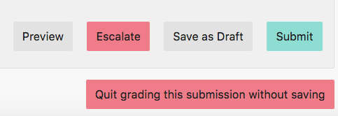
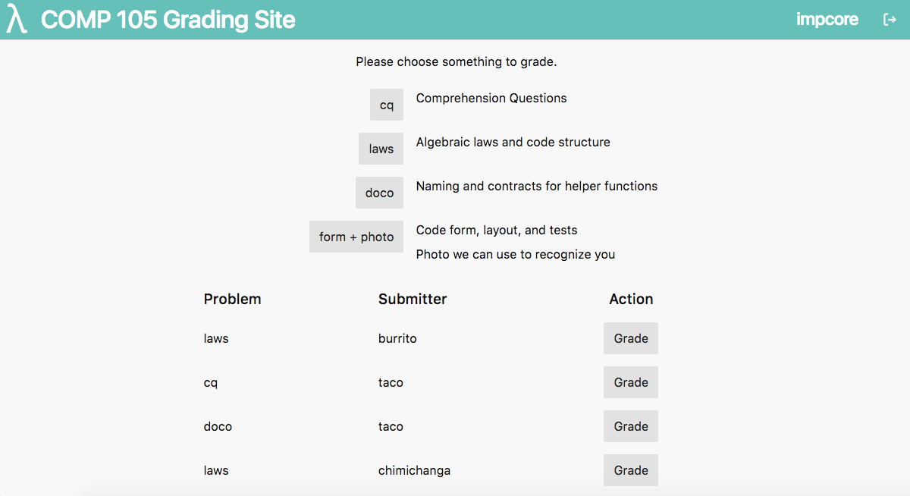
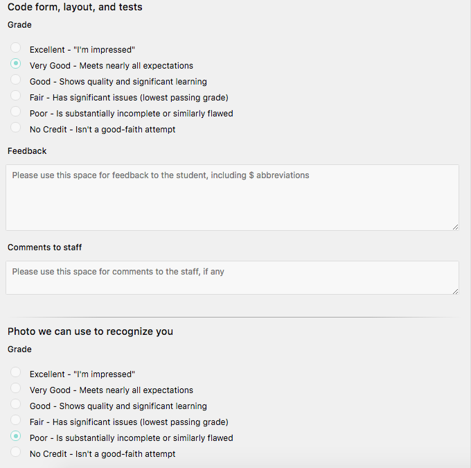
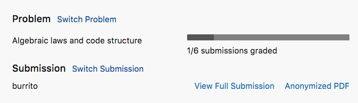
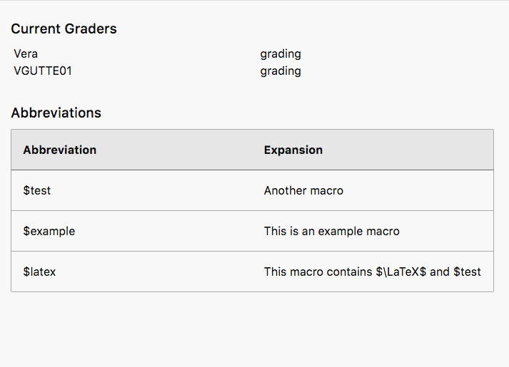
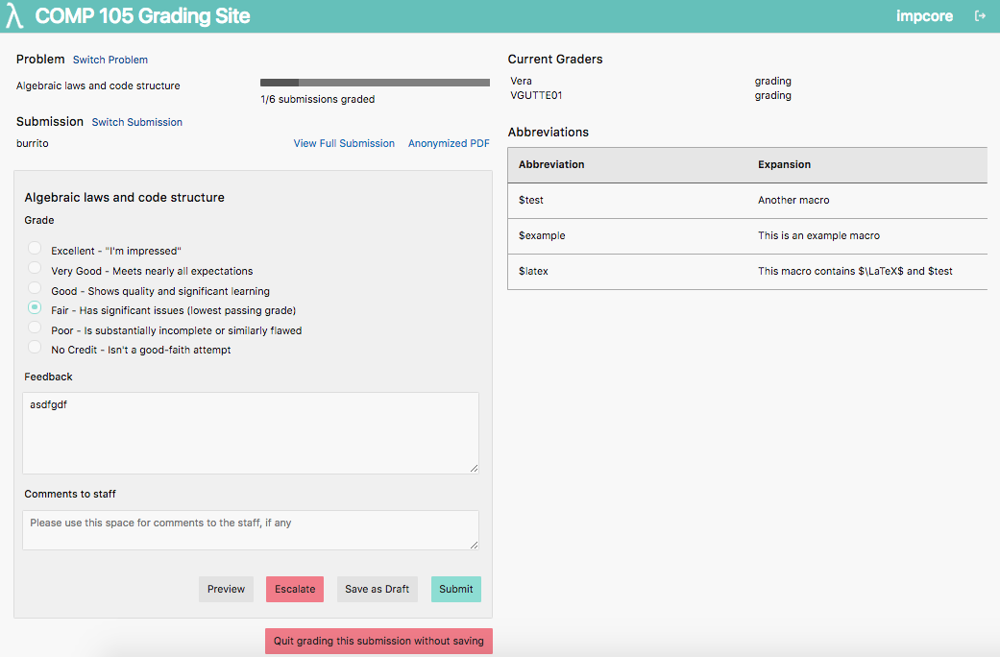
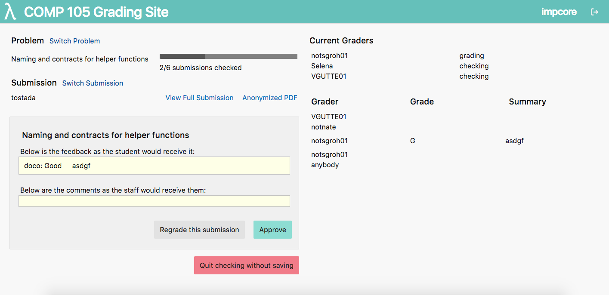

COMP 105 - Programming Languages Grading Site
Idea
As a current Teaching Assistant for the Programming Languages course at Tufts University, every week I attend staff grading sessions of student homework. In order to grade we use a very simple site the professor wrote that has the basic features for grading, but is lacking in terms of visual appearance and usability. I. along with another TA, volunteered to work with the Graduate TA to help redesign and implement the front end for a cleaner, more efficient site.
Basic Functionality and Initial Thoughts
The basic functionality of the site includes joining the current grading "party", picking a problem to grade, and sequentially grading anonimized solutions. On any given grading page there is the problem, the current submission, a dropdown for the grade, and a box for comments. Initially there was no styling. Some intial changes I thought about were to center the problem choices on the main page, to make the grades radio buttons instead of the current dropdown, add a progress bar to view how many submissions of the particular problem have been graded, allow a user to switch the prpblem or submission, and think about colors (especially for buttons). My very initial design for the two pages was done in AdobeXD:


Some further considerations were to organize the information better: split up into sections of problem, submission, grade, and feedback, use icons for external links, and add components that kept track of TAs currently assigned, currently grading, and currently checking.

Implementation
When begining to implement some of the design changes, we decided to search for a CSS framework to aide our design. We settled on mini.css, as it is extremely lightweight and minimal, responsive, and style-agnostic. This framework greatly improved our layout. We made some layout changes for the home page: right aligned the buttons, so that on the left we could have more detailed descriptions. On the grading page, we vertically aligned the information about current graders, and also implemented a grading history component. At the request of the professor, we added descriptions for the grades one could give. Also, after getting some feedback from staff, we went back to word descriptions instead of icons for the external link, to present the information more clearly. Here are the initial implementations of the two pages:

Under the section for feedback, we will also include comments to staff (for TAs to view, but not students), buttons to save progress, escalate (which brings the submission to the attention of the professor if there are serious issues), preview (what it looks like when checking), and submit. We want to right align these buttons and think about what colors to make them.

We also implemented a "check" page, for TAs to check over all of the graded assignments:

Second Iteration
One vital design change implemented was including a consistent top-bar across pages. This top bar included the site name on the left along with a logo we designed,the current homework name on the right, and an icon to exit the current grading iteration on the far right. For the logo, we wanted something simple to be able to also include it as an icon on the tab, to easily distinguish the grading site from other tabs open. We went with a white Lambda on a teal background, since the Lambda represents the main concepts of the class well, and is simple. We are working on a color scheme for the site as well. So far the we have a teal color as the primary color: for now it is the color of the top bar and several action buttons. We also made certain buttons that indicated a "dangerous" change with red. These are buttons such as leaving the grading, exiting without saving, or escalating a problem to the professor.
Some additional changes we implemented had to do with the alignment and layout of the pages. On the home page, we aligned the buttons with the descriptions in a more intuitive format. A backend functionality added was to have a "history" component on this page, so that a grader can go back to a problem they've graded or checked before and regrade it. We displayed this component in a table format on the home page that inlcuded the submitter, problem, and action (i.e. "Re-grade"). We also considered a scenario in which a problem is split into multiple parts on the grading page. We label these parts seperately and split them with a horizontal line. We also moved the "Try a different problem" and "Try a different submission" buttons to be links in their given sections: problem and solution.
  We also implemented a table for macros that TAs can use for a given problem (so that in the feedback, a TA can write just an abbreviation that when vieiwing will expand to longer feedback, if this feedback is common). We put this on the right hand side under the "Currently Grading" information, so that while writing feedback a user can easily refer to and copy/paste the macros they need.
Another thing we thought about was responsiveness: since many people use this site half-width (on the other side, they have the student's homework submission), we considered what it should look like. Since the main part of the grading page is the actual grade and feedback, we kept that on the screen, and the right-hand side elements wrapped to the bottom.
An additional important change made was that we wanted to make the grading and checking pages consistent. We altered the layout of the check page to be the same as the grading page. Here are the 2 full pages:
 Future Changes
One thing we still need to think about is, since now the grade, check, and preview pages look so similar, we need to easily and visually indicate where a user is. We are considering to change the backround color slightly across different pages.
We noticed that there is a lot of wasted white-space on the home page, and that center-aligning all the information is a poor design choice. So we are going to think how to better distribute this information.
Another component we want to change is the "Problem" and "Submission" sections on the top left of the grade page. We think these take up too much vertical space, and allow for less focus on the primary "Grading" component. We think that the "Problem" section can be done away with completely, since the problem(s) are labeled anyway below, and the "Switch Problem" button just brings you back to the home page, which can be done intuitively by clicking on the site heading or logo on the top bar. The progress bar can be moved to wither the "Submission" section or on the right side, since it fits better with the grader/grading information. We are still thinking about how to design the "Submission" section more effectively.
Another component that we are focusing on is the "Comments to Staff" component. This is used rarely, only when there is an issue with the submission, and users have reported that sometimes they accidentally put their feedback in that box. We want to mitigate this problem, and make this component less accessible since it is not used frequnetly, and causes mistakes. One possible solution is to have a button at the bottom instead that says "Add a Comment to Staff", and only upon clicking it, the text box expands. Adding this barier will eliminate the mistake of filling that box out accidentally, and makes m ore sense as it is infrequently used.
Stay tuned for the above changes implemented, and more to come!